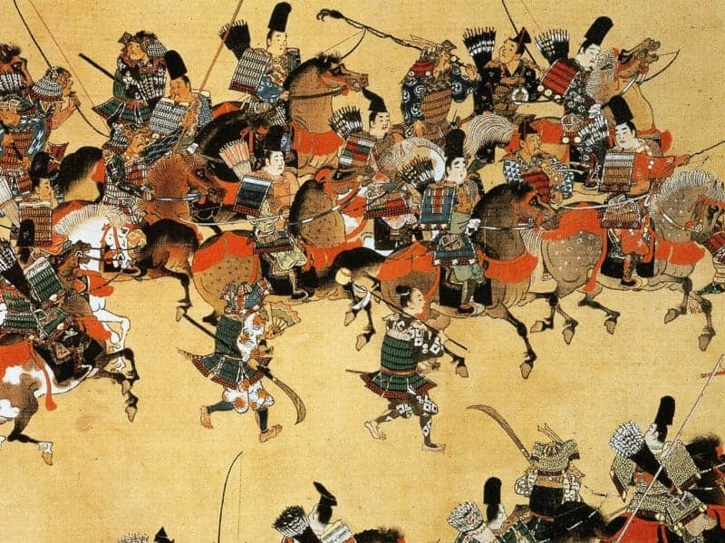
그것은 가마쿠라 막부시대다.
얼굴마담과 실권자가 계속 바뀌는 시대였다.
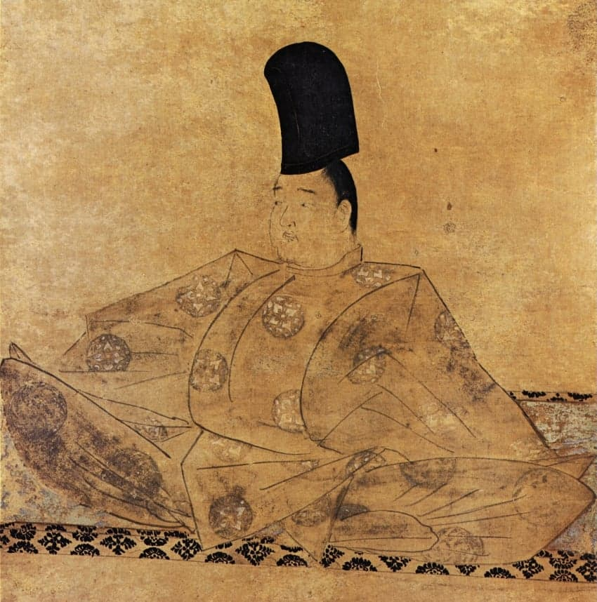
천황=덴노는 실권은 없으나 명목상 일본에서 제일 높은 사람이다.
이 사람은 82대 고토바 덴노.
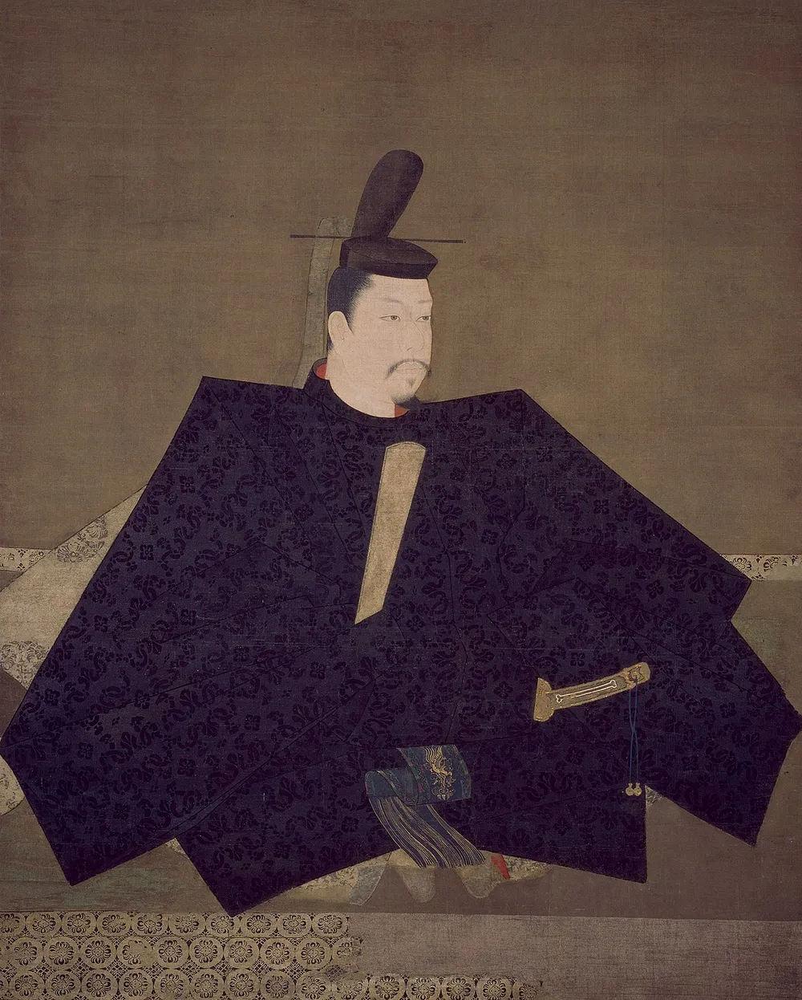
1185년, 미나모토노 요리토모가 가마쿠라 막부를 연다.
덴노를 얼굴마담으로 하고 실권을 장악한다.
1192년엔 (정이대)장군=쇼군으로 정식임명된다.
그는 1199년 죽고 아들 요리이에가 2대 쇼군이 된다.
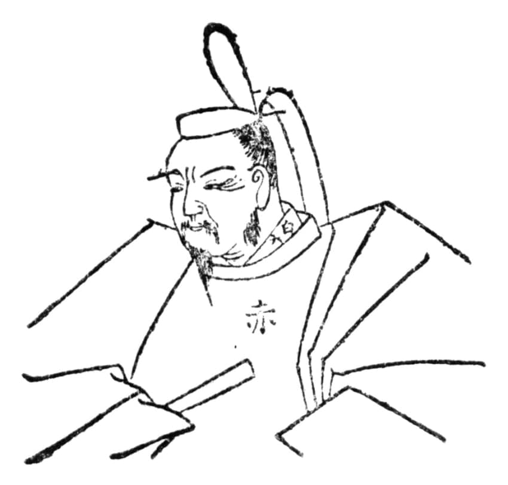
1203년, 요리토모의 아내 마사코의 아버지, 그러니까 요리토모의 장인 호죠 토키마사는 외손자 요리이에를 폐위후 암살한다.
요리이에의 동생 사네토모를 쇼군에 올려 얼굴마담으로 하고, 집권=싯켄이란 직위에 올라 실권을 장악한다.
이때부터 일본 실권자는 싯켄이다.
1219년 사네토모도 암살당하며 요리토모 직계는 대가 끊겼고,
그후 쇼군은 귀족이나 황족이 맡는다.
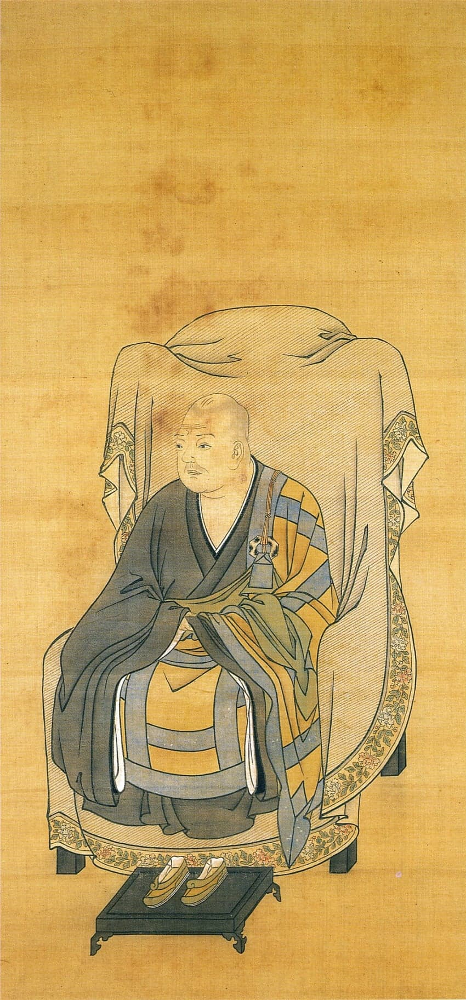
1256년, 5대 싯켄 호죠 토키요리는 싯켄에서 물러났는데도 싯켄을 얼굴마담으로 하고,
호죠 본가의 수장인 득종=토쿠소로서 실권을 휘두른다.
이때부터 일본 실권자는 토쿠소다.
다만 싯켄과 토쿠소를 겸할수도 있었다. 싯켄과 토쿠소가 다를 경우 실권은 토쿠소에 있었다는 말.
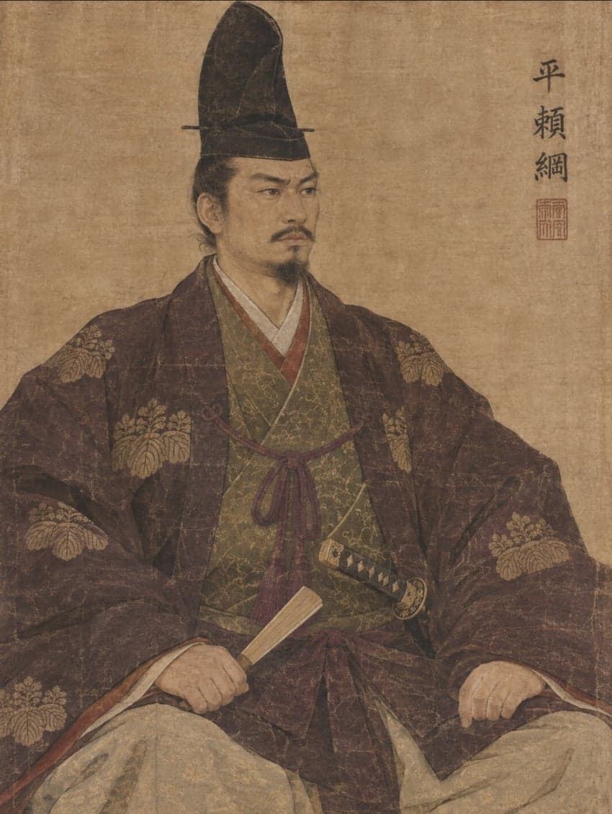
1285년, 호죠 가문의 가신단을 총괄하고 가문운영을 맡은 집사 내관령=나이칸레이 타이라노 요리츠나가 정적 안다치 야스모리를 조져버리고 호죠가문과 막부를 장악한다.
이를 시모츠키 소동이라 한다.
이때부터 일본 실권자는 나이칸레이다.
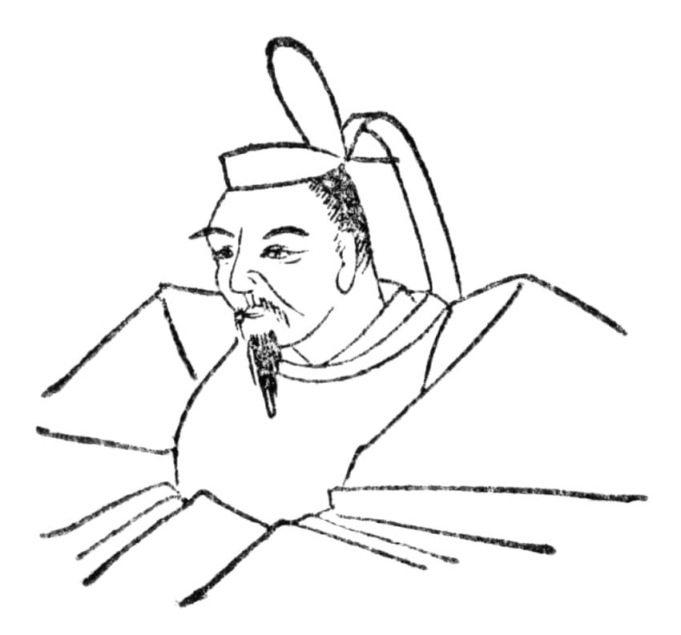
1293년, 토쿠소이자 제 9대 싯켄 호죠 사다토키가 요리츠나를 조져버리고 권력을 회복한다.
이를 헤이젠몬의 난이라고 한다.
다시 실권자는 토쿠소다.
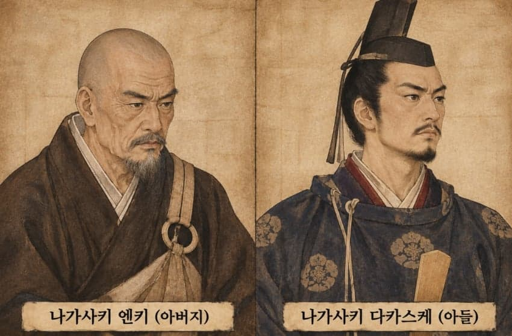
1311년, 호죠 사다토키가 사망하면서 어린 아들 호죠 타카토키가 가문을 잇는다.
나이칸레이 엔키가 실권을 잡고, 엔키는 자리를 아들 다카스케에게 물려준다.
또 다시 일본 실권자는 나이칸레이가 되었다.
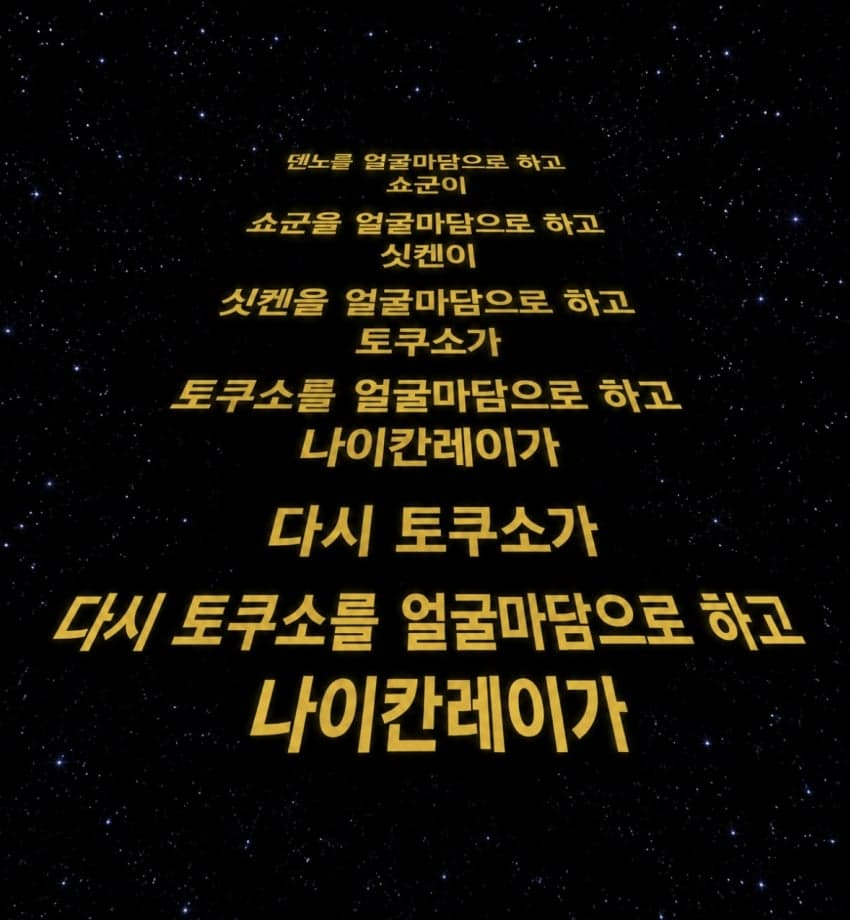
실화냐?
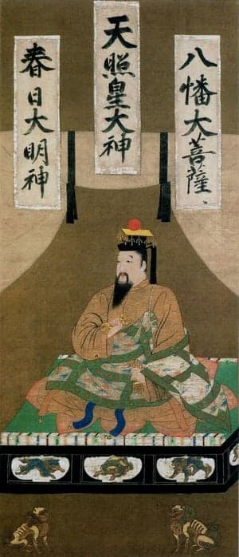
(고다이고 덴노)
골 때리는 가마쿠라 막부는 1333년,
고다이고 덴노가 막부의 유력한 무사 아시카가 다카우지, 닛타 요시사다와 손을 잡고 공격에 나서 멸망한다.
호죠 가문과 나가사키 가문을 포함한 가신 가문은 다수가 스스로 목숨을 끊었다.
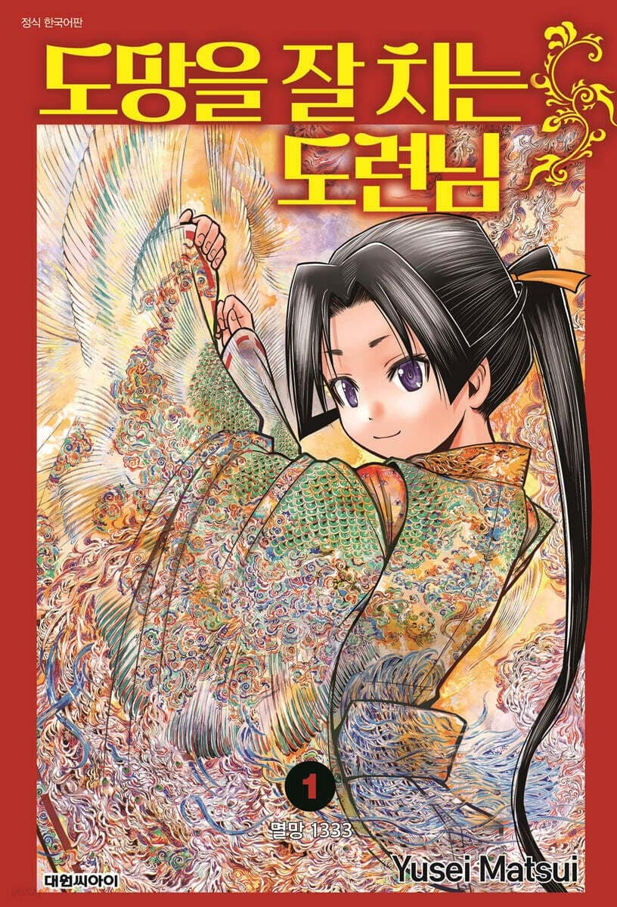
호죠 가문의 생존자이자 타카토키의 아들 호죠 토키유키가 2년후 나카센다이의 난이라는 반란을 일으킨다.
이를 다룬 만화가 '도망을 잘 치는 도련님'이다.
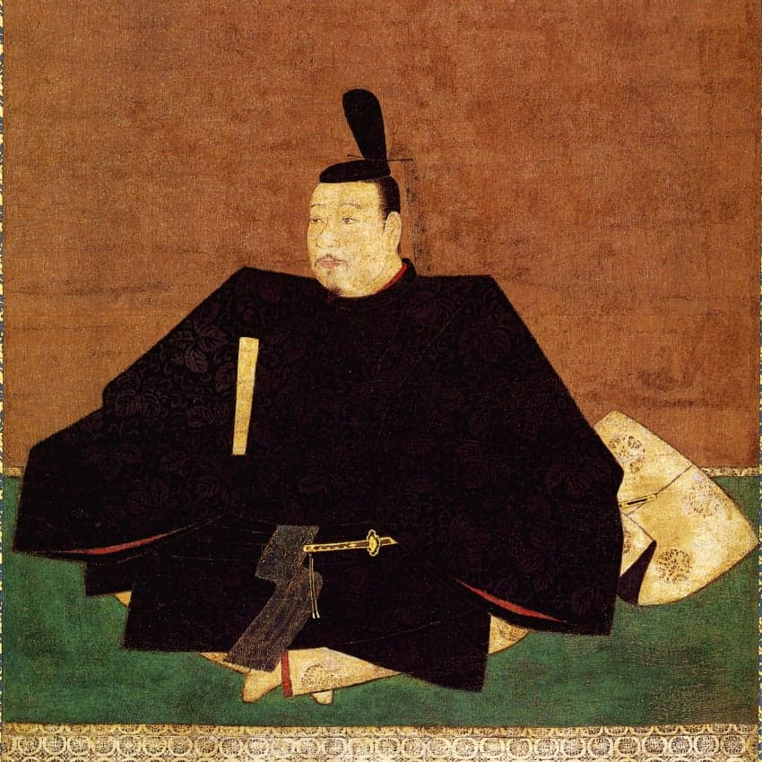
(아시카가 다카우지)
다카우지는 고다이고 덴노에게 충성을 바치는 척하다 통수를 때려 감금하고, 새 덴노를 세운뒤 1336년 무로마치 막부를 연다.
고다이고 덴노는 탈출해 남조를 세우고 북조-무로마치 막부와 대립한다. 이것이 일본의 남북조시대다.
남북조시대는 3대 쇼군 아시카가 요시미츠가 남조와 협상해 통일하면서 1392년 막을 내린다.
지금까지 머리 아파지는 가마쿠라 막부 시대의 권력구조를 알아보았다.
댓글
수집 당시 댓글 138개
· ㅇㅇ · 11.24 00:45:39
ㅇㅇ · 11.24 00:00:13
ㅇㅇ · 11.24 00:02:02
· ㅇㅇ · 11.24 00:03:21
· ㅇㅇ · 11.24 00:24:08
· 공정성장 · 11.24 00:40:29
· ㅇㅇ · 11.24 01:36:08
· ㅇㅇ · 11.24 02:45:24
· ㅇㅇ · 11.24 07:16:43
· ㅇㅇ · 11.24 16:33:16
ㅇㅇ · 11.24 00:02:24
ㅇㅇ · 11.24 00:05:31
· ㅇㅇ · 11.24 00:11:50
· .。 · 11.24 00:11:58
· ㅇㅇ · 11.24 00:12:13
· ㅇㅇ · 11.24 00:16:17
· つついあやめのおっと · 11.24 00:16:26
· つついあやめのおっと · 11.24 00:21:00
· 공정성장 · 11.24 00:40:11
· ㅇㅇ · 11.24 00:49:16
· ㅇㅇ · 11.24 00:49:19
· ㅇㅇ · 11.24 00:54:07
· ㅇㅇ · 11.24 01:17:55
· ㅇㅇ · 11.24 02:49:51
· ㅇㅇ · 11.24 02:52:00
· ㅇㅇ · 11.24 08:45:39
· ㅇㅇ · 11.24 09:42:56
· ㅇㅇ · 11.24 09:43:56
· ㅇㅇ · 11.24 09:45:00
· ㅇㅇ · 11.24 10:40:58
· ㅇㅇ · 11.24 11:17:05
· ㅇㅇ · 11.24 11:18:11
· swif · 11.24 12:05:38
· ㅇ ㅇ · 11.24 12:47:31
· つついあやめのおっと · 11.24 13:11:02
· ㅇㅇ · 11.24 15:14:09
ㅇㅇ · 11.24 00:14:13
· ㅇㅇ · 11.24 00:31:33
ㅇㅇ · 11.24 00:14:33
니폰 언제 이기냐 ? ㅋㅋ
ㅇㅇ · 11.24 00:18:31
황족 · 11.24 00:18:47
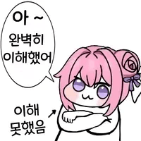
ㅇㅇ · 11.24 00:18:54
· ㅇㅇ · 11.24 00:21:44
· ㅇㅇ · 11.24 00:22:55
· ㅇㅇ · 11.24 00:24:45
· ㅇㅇ · 11.24 00:25:09
· ㅇㅇ · 11.24 01:40:12
· ㅇㅇ · 11.24 09:28:02
· ㅇㅇ · 11.24 11:13:15
· ㅇㅇ · 11.24 11:14:12
· ㅇㅇ · 11.24 11:56:47
ㅇㅇ · 11.24 00:20:19
공정성장 · 11.24 00:23:07
ㅇㅇ · 11.24 00:24:27
· ㅇㅇ · 11.24 00:25:56
· ㅇㅇ · 11.24 00:27:11
· ㅇㅇ · 11.24 02:54:40
· ㅇㅇ · 11.24 09:45:04
· ㅇㅇ · 11.24 11:11:20
· ㅇㅇ · 11.24 11:25:12
· ㅇㅇ · 11.24 11:41:27
ㅇㅇ · 11.24 00:25:11
ㅇㅇ · 11.24 00:25:56
· つついあやめのおっと · 11.24 00:30:41
· ㅇㅇ · 11.24 01:06:44
· つついあやめのおっと · 11.24 02:36:32
ㅇㅇ · 11.24 00:30:22
ㅇㅇ · 11.24 00:33:18
안정적 · 11.24 00:38:03
· つついあやめのおっと · 11.24 00:39:17
ㅇㅅㅇ · 11.24 00:39:18
· ㅇㅅㅇ · 11.24 00:42:54
· ㅇㅇ · 11.24 00:44:07
· ㅇ ㅇ · 11.24 01:17:21
· ㅇㅇ · 11.24 11:24:13
ㅇ ㅇ · 11.24 01:14:48
· ㅇㅇ · 11.24 01:23:09
ㅇㅇ · 11.24 01:15:54
ㅇㅇ · 11.24 01:16:55
ㅇㅇ · 11.24 01:56:47
ㅇㅇ · 11.24 02:05:07
히이잉 · 11.24 02:05:10
ㅇㅇ · 11.24 02:34:02
ㅇㅇ · 11.24 02:57:46
ㅇㅇ · 11.24 03:00:40
ㅇㅇ · 11.24 03:00:46
0000 · 11.24 08:33:43
ㅇㅇ · 11.24 08:57:32
ㅇㅇ · 11.24 10:52:52
· ㅇㅇ · 11.24 11:19:03
· ㅇㅇ · 11.24 11:32:01
· ㅇㅇ · 11.24 16:48:06
ㅇㅇ · 11.24 10:56:46
ㅇㅇ · 11.24 11:20:33
ㅇㅇ · 11.24 11:21:15
ㅇㅇ · 11.24 11:27:14
ㅇㅇ · 11.24 15:02:40
ㅇㅇ · 11.24 15:15:59
ㅇㅇ · 11.24 16:14:39
ㅇㅇ · 11.24 17:19:38
코알라코끼리 · 11.21 23:11:26
· 하나둘팬클럽 · 11.21 23:51:32
· 토익100점의사나이 · 11.22 00:09:01
ㅇㅇ · 11.21 23:11:47
· ㅇㅇ · 11.22 01:03:14
· Byzantina · 11.22 05:05:18
· ㅇㅇ · 11.23 23:57:34
· ㅇㅇ · 11.24 00:17:24
· 고소 · 11.24 00:29:10
ㅇㅇ · 11.21 23:12:14
개댇지 · 11.21 23:14:42
배신자캬루 · 11.21 23:17:46
· ㅇㅇ · 11.21 23:18:59
· 배신자캬루 · 11.21 23:24:08
· DOOM · 11.24 00:04:08
· ㅇㅇ · 11.24 00:42:04
· ㅇㅇ · 11.24 00:42:08
· ㅇㅇ · 11.24 00:43:48
레이라 · 11.21 23:20:18
· ㅇㅇ · 11.21 23:24:20
· ㅇㅇ · 11.21 23:28:26
· ㅇㅇ · 11.21 23:38:38
· 레이라 · 11.21 23:45:35
· ㅇㅇ · 11.24 00:25:17
· ㅇㅇ · 11.24 09:25:15
ㅇㅇ · 11.21 23:22:34
ㅇㅇ · 11.21 23:54:30
· ㅇㅇ · 11.22 05:52:46
ㅇㅇ · 11.22 00:19:04
ㅇㅇ · 11.22 00:19:21
ㅇㅇ · 11.22 00:52:05
de · 11.22 01:38:42
· ㅇㅇ · 11.24 00:00:21
· ㅇㅇ · 11.24 00:04:22
ㅇㅇ · 11.22 08:40:23
· 스틸콜드 · 11.22 10:27:56
· ㅇㅇ · 11.24 00:18:38
ㅇㅇ · 11.23 23:57:05